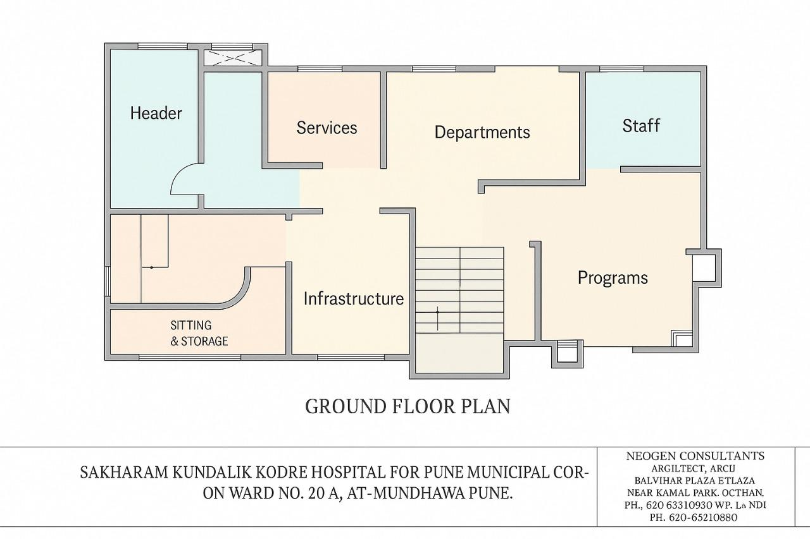

रुग्णालयाची सुविधा
आमच्या रुग्णालयात अत्याधुनिक सुविधा आणि उपकरणे उपलब्ध आहेत
रुग्णालयाचा नकाशा

भूमितल नकाशा
आमच्या रुग्णालयाच्या विभागांचा संपूर्ण लेआउट आणि सुविधांचे स्थान
- सेवा विभाग (Services)
- विभाग कक्ष (Departments)
- कर्मचारी विभाग (Staff)
- कार्यक्रम विभाग (Programs)
- अपेक्षा कक्ष (Sitting & Storage)
- सुविधा विभाग (Infrastructure)
आधुनिक प्रसूती कक्ष
सुरक्षित प्रसूतीसाठी संपूर्ण सुविधायुक्त आणि स्वच्छ प्रसूती कक्ष
उन्नत वैद्यकीय उपकरणे
आधुनिक तंत्रज्ञानावर आधारित वैद्यकीय उपकरणे आणि यंत्रसामुग्री
आपत्कालीन सेवा
२४ तास उपलब्ध आपत्कालीन सेवा आणि अँब्युलन्स सुविधा
आरामदायक खोल्या
रुग्णांसाठी आरामदायक आणि स्वच्छ खोल्या सर्व आवश्यक सुविधांसह
प्रयोगशाळा
संपूर्ण सुसज्ज प्रयोगशाळा सर्व प्रकारच्या चाचण्यांसाठी
फार्मसी
सर्व आवश्यक औषधे उपलब्ध असलेली इन-हाऊस फार्मसी
डायग्नोस्टिक सेंटर
एक्स-रे, अल्ट्रासाऊंड आणि इतर डायग्नोस्टिक सुविधा
नवजात विभाग
नवजात बालकांसाठी विशेष काळजी आणि उपचार विभाग
कुशल डॉक्टर आणि नर्स
अनुभवी आणि कुशल वैद्यकीय कर्मचारी उपलब्ध
अतिरिक्त सुविधा
✓
२४ तास वीज पुरवठा
✓
शुद्ध पिण्याचे पाणी
✓
पार्किंग सुविधा
✓
कॅंटिन आणि प्रतीक्षालय
✓
वाय-फाय इंटरनेट
✓
दिव्यांग व्यक्तींसाठी सुविधा